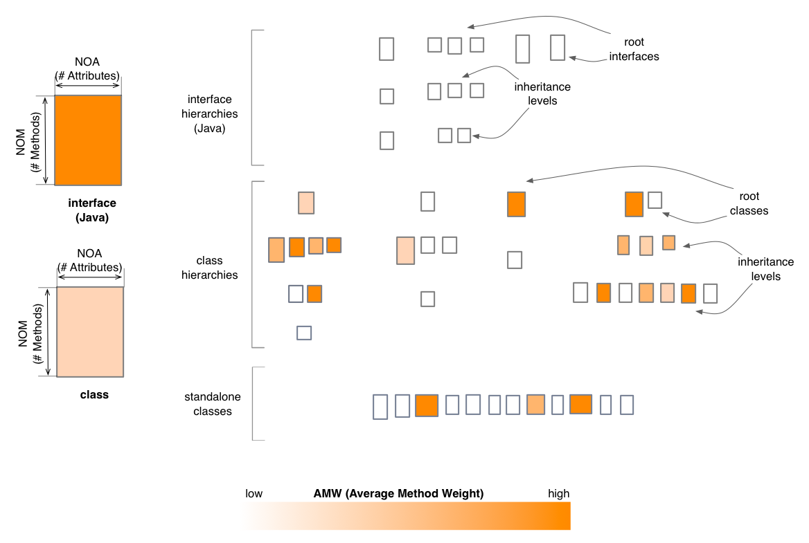

Inheritance Map - Complexity Perspective
The Complexity Perspective of the Inheritance Map
colors the classes and interfaces (Java) based on their AMW (Average Method Weight) metric values.
This coloring uses a white to orange gradient, with darker shades of
orange for higher AMW values.

Entity selection
The user may select a class or an interface in the map, in
which case the general behavior described for the base
map appllies. The coloring of the map does not change.
Other quality perspectives
Coupling, Design Flaws,
Encapsulation, Inheritance
Metrics used
AMW, DIT
(indirectly), NOA, NOM